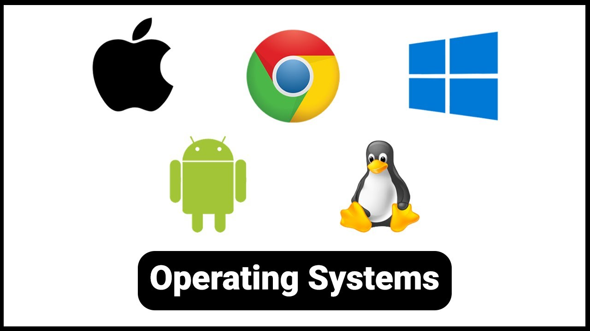

Process management
The OS starts programs, gives them time to use the processor, and helps them share system resources.
HW 1: HTML and CSS
The software that helps people and applications communicate with computer hardware.
An operating system (OS) is the main software that manages a computer or mobile device. It controls hardware resources, provides a way for people to interact with a device, and gives applications services they need to run. Without an operating system, most users would have to communicate with hardware directly.
Common examples include Microsoft Windows, macOS, Linux, Android, and iOS. They have different designs, but they all help manage the device and run programs.

The OS starts programs, gives them time to use the processor, and helps them share system resources.
It tracks memory use and assigns space to programs while helping keep their data separate.
It organizes files and folders and controls how programs and users access stored information.
Operating systems are one part of a larger computing environment. Programmers use programming languages to create software. Applications may store information in databases, and developers use these ideas when building mobile apps.
In short, the operating system provides the foundation that allows many other software tools to work together.